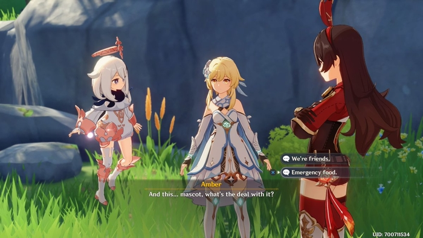
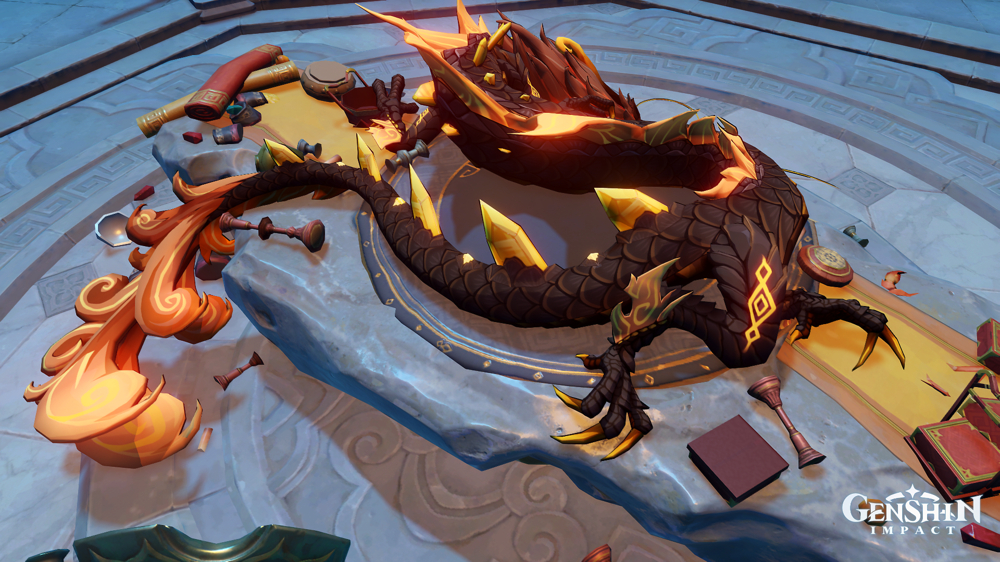
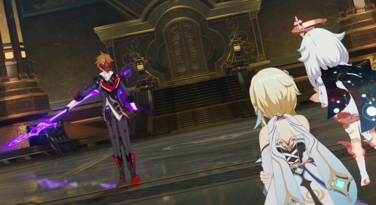
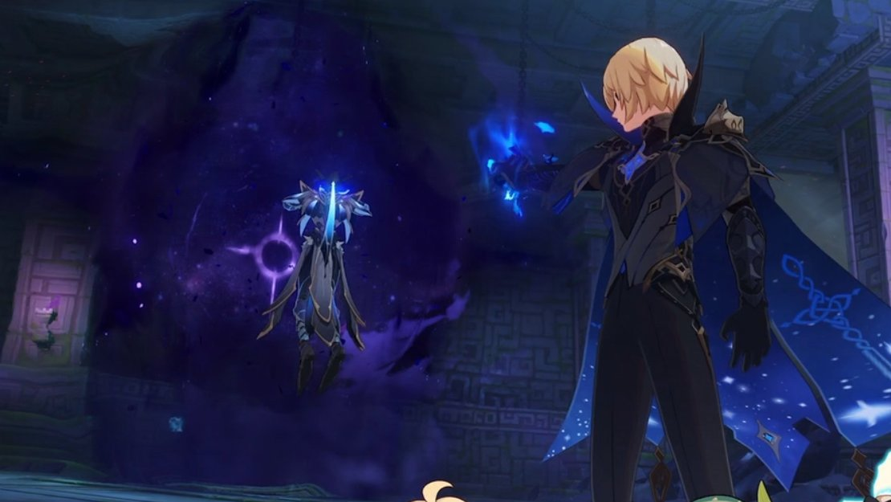
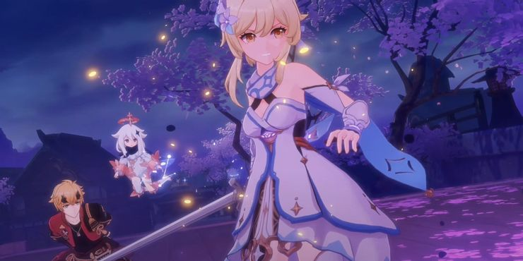
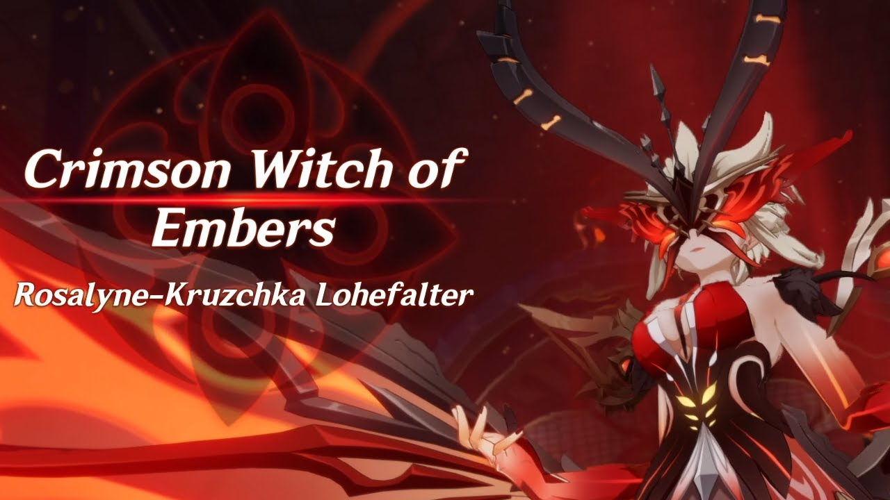

Mondstadt's story arc begins when the Traveler fishes Paimon out of the water and explains that they were attacked by
the Unknown God and have been separated from their sibling. The two head to Mondstadt, where they soon see Venti with
Dvalin, currently referred to as Stormterror, and then shortly after encounter Amber.

Soon they learn that Stormterror is out of control and creating havoc with a windstorm in Mondstadt city. The Traveler
teams up with the Knight of Favonis, Venti, and Diluc to find the causes of Stormterror's rage and put a stop to it.
Along the way, the Abyss is introduced and ultimately revealed to be the reason for Dvalin's corruption. The team
eventually makes their way to Stormterror's lair, where they calm the dragon and save the day with the help of the Holy
Lyre that is stolen from the church of Barbatos.Afterward, Venti is attacked outside the church, and his Gnosis is stolen by La Signora, the first Harbinger ever shown
in the game. You'll also learn that Venti is Barbatos, the Anemo Archon, in human form.

After Talking with Venti, The Traveler and Paimon head to Liyue to speak with Rex Lapis, Lord of Geo. Upon making their
way into Liyue, they attend the Rite of Descention hosted by Ningguang, where Rex Lapis is seemingly murdered. Suspected for involvement in the murder, the pair quickly flee the scene with the help of a mysterious man named Childe.
He sends the Traveler to Jueyun Karst to speak with an Adepti, in order to clear their name. After meeting with them,
Childe then introduces the pair to Zhongli, and they begin to help him complete the Rite of Parting.
During this time, they meet with Ningguang and begin to gather evidence of Fatui's involvement in the death of Rex
Lapis. This is interrupted, though, as the Adepti and Millenth nearly go to war, and the Traveler must race to the
Golden House to keep the Geo Gnosis from being stolen by Childe.

Upon entering the golden house, Childe reveals himself as Tartaglia, and it's also revealed that the Geo Gnosis isn't
inside the body of Rex Lapis.
After an intense battle, Childe summons Osai, who is beaten by the Traveler and Adepti. Shortly after, you learn that
Zhongli is the Geo Archon and is giving his Gnosis freely to La Signora. Childe was left in the dark, and Zhongli faked
his own death to stop being the region's Archon.
The Post Liyue storyline is brief but reveals that the Traveler witnessed the downfall of a human-run nation known as
Khaenri'ah and a character named Dainslief was once their captain of Royal guard. It's also revealed that your sibling now leads the
Abyss order and wants revenge against the Archons who stole the nation.

The Abyss mages themselves are the people of Khaenri'ah who have changed forms. Another Harbinger named Scaramouche also
appears when a mysterious meteor falls from the sky and reveals that Teyvat's sky isn't real.
After that with the help of Beidou and an escapee named Kazuha, the Traveler gains passage to the locked-down nation of Inazuma.Once there, they get help from Thoma and then Ayaka to get into the country, where they learn about the Vision Hunt
Decree and end up joining the region's resistance.

The Traveler and Paimon locate and then head to the delusion factory where they meet Scaramouche and are almost killed
by him. Luckily, Yae Miko saves the day and brings them to her shrine, where she begins her plan to free Ei, the actual
Electro Archon, from her self-imposed imprisonment.
After convincing the Shogun's general Sara for help and Yoimiya causing a distraction, the Traveler makes their way into
the Raiden Shogun's palace, where they run into La Signora and must have a battle before the throne.
Signora is revealed to be the Crimson Witch of Embers but loses the battle causing the Raiden Shogun to kill her.
Afterward, the Traveler leaves the palace only to be attacked shortly after by the Raiden Shogun.

Kazuha saves the Traveler's life, and they get sucked into the domain where Ei is hiding. After a short battle, Yae
appears in the domain, and the Traveler uses the ambitions of the people of Inazuma to win the fight.
Kazuha saves the Traveler's life, and they get sucked into the domain where Ei is hiding. After a short battle, Yae
appears in the domain, and the Traveler uses the ambitions of the people of Inazuma to win the fight.
This forces Ei to realize the trouble her puppet, Raiden Shogun, has caused in Inazuma. She brings a stop to the Vision
Hunt Decree and comes to terms with the fact that she can't have her version of eternity.

After the battle, the Traveler speaks with Yae to learn that she had the Electro Gnosis for years and gave it to
Scaramouche, who is revealed to be Raiden Shoguns' first puppet creation in exchange for saving the Traveler's life at
the delusion factory.